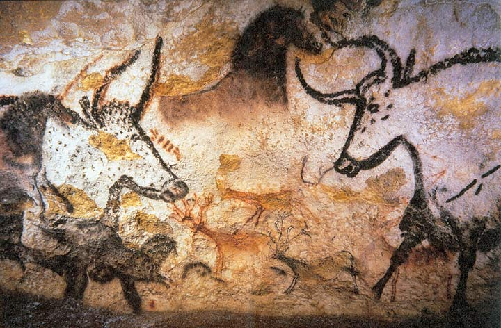
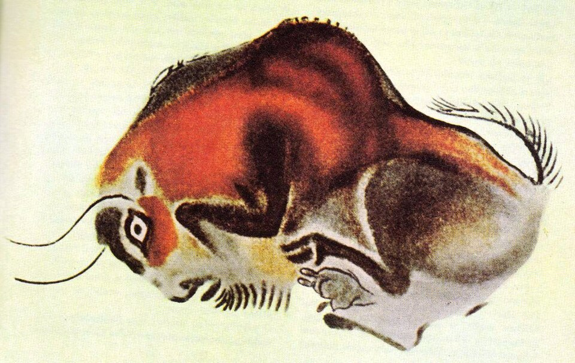
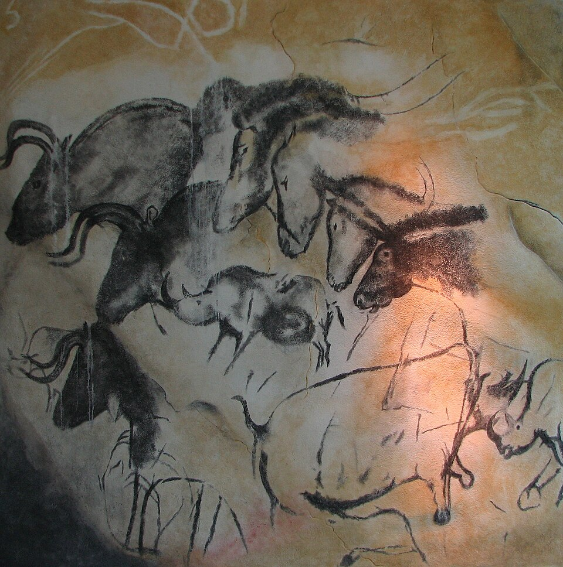
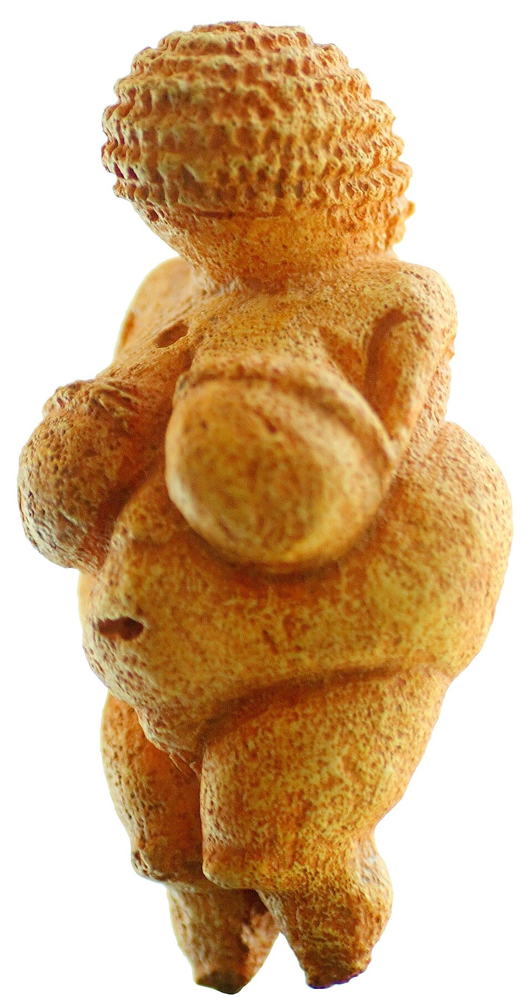

Home › Prehistoric › Paleolithic
Paleolithic art
The Paleolithic ("Old Stone Age") is the long period when all humans lived by hunting and gathering. Its art falls into two kinds: parietal art (on cave walls and rock) and portable art (small objects carved from bone, ivory, antler and stone).
Cave painting


Painters used red and yellow ochre, black charcoal or manganese, applied with fingers, moss pads, brushes or by blowing pigment through a hollow bone. They often used the natural bulges of the rock to give animals volume.
- Chauvet Cave, France (~36,000 years ago). Lions, rhinos, bears and horses, with overlapping outlines that suggest movement.
- Altamira, Spain. Painted bison on the ceiling, made over many millennia.
- Lascaux, France (~17,000 years ago). Over 600 painted figures, including the Hall of the Bulls. The original cave is closed to protect it; a replica is open to visitors.
- Leang Tedongnge, Sulawesi (≥45,500 years ago). A warty pig, currently among the oldest dated figurative paintings.



.jpg){kind=link}
Hand stencils and signs
Hands outlined in blown pigment appear from Spain to Sulawesi to Argentina. Alongside animals, caves contain recurring abstract signs: dots, lines, grids. Their meaning is unknown.
Portable art and the Venus figurines


- Lion-Man (~40,000 years ago, Germany). A mammoth-ivory figure combining human and lion, evidence of imagination beyond the visible world.
- Venus of Hohle Fels (~40,000–35,000 years ago, Germany). Among the oldest known depictions of the human form.
- Venus of Willendorf (~28,000–25,000 BCE, Austria). An 11 cm limestone figure with exaggerated body features and no face. "Venus" is a 19th-century nickname and says nothing of its original meaning.
What did it mean?
Theories include hunting magic, shamanic trance imagery, myth-telling and group identity. Modern scholars treat each as a hypothesis and expect different answers for different sites.